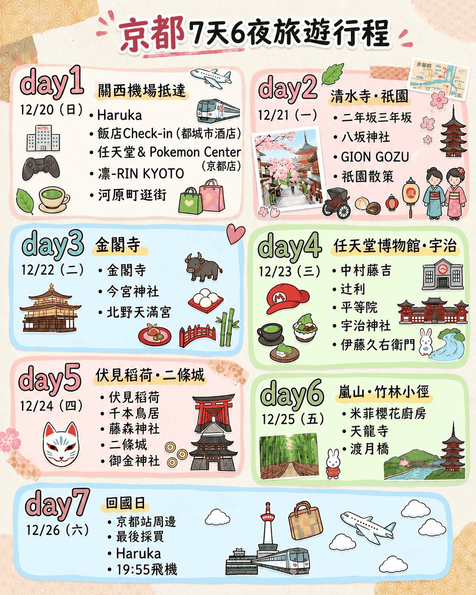

🕒抵達 KIX 機場
關西國際機場 (KIX) 降落
約 45~60 分鐘
展開交通與備註
交通
飛機降落關西機場，依指示辦理入境審查、領取行李，前往關西機場站（JR剪票口）。
提醒
不用設正式出門時間；注意入境人潮
周邊
關西機場
都城市酒店｜近鐵京都站
團購／花費可用 DataBuilder 記錄
開啟記帳表
DAY 1
抵京都・河原町首日
12/20 (日)
約 45~60 分鐘
飛機降落關西機場，依指示辦理入境審查、領取行李，前往關西機場站（JR剪票口）。
不用設正式出門時間；注意入境人潮
關西機場
約 75~80 分鐘
關西機場站搭乘【JR 特急 HARUKA】直達「JR 京都站」（下車即達八条口旁飯店）。
特急 HARUKA 約 75~80 分鐘直達京都
京都車站直結
步行約 2 分鐘
京都車站八条口方向出站，步行 1~2 分鐘即達飯店大廳寄放行李/辦理入住。
飯店位於車站共構／鄰近，極為便利
飯店放行李
公車約 15~18 分鐘
從飯店走到京都站前搭乘【市營公車 4 / 5 / 17 / 205 號】至「四条河原町」站下車即達（或搭地鐵烏丸線至四条站轉阪急京都線至京都河原町站）。兩家店分別位於 SUINA室町 及 京都高島屋S.C. [T8]。
任天堂旗艦店人潮多時可能需抽整理券
近鐵京都站出發
步行約 7~10 分鐘
從四条河原町商圈步行前往（位於佛光寺通／烏丸周邊），悠閒散步即達。
熱門抹茶名店
四条商圈內步行
全段步行 (各點約 3~5 分)
全程【步行逛街】。四条河原町OPA、新京極通與寺町京極商店街一路連通，步行輕鬆逛透透。
集中在河原町/新京極步行圈內
新京極商圈
步行約 3~5 分鐘
步行至四条河原町旁的先斗町通或木屋町通，沿著高瀨川／鴨川旁挑選美味燒肉或居酒屋料理。
可視體力彈性選擇
鴨川/先斗町
公車約 15 分鐘
在「四条河原町」搭乘【市營公車 4 / 17 / 205 號】直達「京都站前」，步行回飯店；若體力尚可，可逛飯店對面【京都 AVANTI】或【唐吉訶德（開至24:00）】。
近鐵京都站都城市酒店
隨時可逛 AVANTI/唐吉訶德
DAY 2
清水寺・祇園散步
12/21 (一)
公車約 15~20 分鐘 (計程車約10分)
京都站前 D2 乘車處搭乘【市營公車 206 號】（或急行 106 號）至「清水道」或「五条坂」站下車；若 2~4 人同行，亦推薦直接從飯店前搭【計程車】，省力直達松原通坡底。
搭乘市公車或計程車至五条坂/清水道
建議 07:30~08:00 出門
步行約 10~15 分鐘上坡
沿清水道／松原通緩步上坡，途經 SNOOPY Chocolat，隨後進入清水寺參拜仁王門、清水舞台、音羽之瀑。
清水寺清晨遊客較少，景致最寧靜壯觀
清晨人潮最少
全段下坡步行約 15~20 分鐘
從清水寺順下產寧坂（三年坂）接二年坂（二寧坂），沿途逛 John's Blend 香氛、橡子共和國（吉卜力龍貓），並至八十八良葉舍（Hatoya Ryoyousha）品嚐特濃宇治抹茶拿鐵/甜點。
石階坡道多，穿著舒適好走的鞋子
三年坂・二年坂
步行約 10~12 分鐘
沿寧寧之道、圓山公園漫步至【八坂神社】參拜，出八坂神社西樓門即達祇園四条通，步行至【GION GOZU 四条店】享用精緻和牛/午餐。
GION GOZU 建議留意營業時間或提早預約
祇園四条通
步行約 8~12 分鐘
從 GION GOZU 漫步經【花見小路】感受古町家風情，走過四条大橋越過鴨川，抵達河原町商圈享受美食與晚餐。
傳統古町家風貌，注意拍照禮節
鴨川・河原町
公車約 15 分鐘
在「四条河原町」搭乘【市營公車 4 / 5 / 17 / 205 號】回「京都站前」，步行返回都城市酒店；晚上可逛車站旁【友都八喜】或【Porta地下街】。
近鐵京都站都城市酒店
京都站周邊自由逛
DAY 3
金閣寺・北野今宮
12/22 (二)
公車約 40~45 分鐘
京都站前 B3 乘車處搭乘【市營公車 205 號】直達「金閣寺道」站下車，下車後依指標步行 3 分鐘即達大門。
搭乘市公車直達金閣寺道
建議 08:00 出門
園區內步行約 45~60 分鐘
徒步入寺參拜，順著參觀動線欣賞鏡湖池舍利殿金碧輝煌的絕美倒影與陸舟之松。
早晨順光時段拍照最佳
金色舍利殿
公車約 6~8 分鐘 (步行約20分)
從金閣寺道搭乘【市營公車 101 / 102 / 204 / 205 號】（約 2~3 站）至「北野天滿宮前」站下車即達；亦可散步前往（約 1.5 公里）。
若適逢每月 25 日會有天神市集
摸御神牛求學問
公車約 12~15 分鐘
在「北野天滿宮前」搭乘【市營公車 46 號】至「今宮神社前」站下車；參拜完後在東門旁品嚐千年炭烤甜味「阿倍野炙烤麻糬 (あぶり餅)」。
不可錯過一文字屋和助 (一文字屋わすけ)
開運玉之輿神社
依選擇約 10~25 分車程
【建議方案A：大德寺】今宮神社步行 8 分即達大德寺，枯山水與茶道名剎極致幽靜。 【建議方案B：出町柳與跳烏龜】搭公車 1 / 205 至出町柳，買名物雙葉豆餅並到鴨川跳烏龜。 【建議方案C：京都御所】搭公車至同志社前／烏丸今出川，漫步皇家御苑。
可依體力與天氣自由選擇
依個人體力彈性遊覽
地鐵約 12 分 / 公車約 35 分
搭乘市公車（如 205 / 206 號）或從北大路站搭【地鐵烏丸線】直達「京都站」，晚餐在車站伊勢丹 11 樓拉麵小路或地下美食街享用。
近鐵京都站都城市酒店
京都站伊勢丹
DAY 4
任天堂博物館・宇治
12/23 (三)
近鐵電車約 17~22 分鐘 (JR約20分)
【至任天堂博物館交通】： 方案 1（最推薦）：從飯店走到京都站近鐵月台，搭乘【近鐵京都線】直達「小倉站」（東出口步行約 5 分鐘）。 方案 2：京都站搭乘【JR 奈良線】至「JR JR小倉站」（南出口步行約 8 分鐘）。
電車：JR 奈良線到小倉站／JR 小倉站 或 近鐵小倉站
交通完全直達小倉
出站步行 5~8 分鐘
出小倉站後步行至任天堂博物館。館內體驗巨型紅白機搖桿遊戲、花牌工坊與專屬紀念品採買。
必須持預約確認憑證與護照入館
依預約時段準時入場
JR 電車 3 分鐘 + 步行 2 分鐘
從小倉站搭【JR 奈良線】至「JR 宇治站」（僅 1 站約 3 分鐘），出站正對面步行 1 分鐘即達【中村藤吉本店】（建議先抽號碼牌）；再沿宇治橋通漫步至【辻利 宇治本店】品茶。
抵達宇治第一件事先抽號碼牌
宇治茶兩大經典本店
步行約 8~10 分鐘
沿平等院表參道步行前往【平等院】，參觀印在十日圓硬幣上的鳳凰堂、淨土庭園與鳳翔館博物館。
欣賞宇治川畔世界遺產之美
宇治世界遺產
步行約 10 分鐘
穿過喜仙橋越過宇治川，步行至【宇治神社】（求學問、兔子神籤）與世界遺產【宇治上神社】（日本最古老神社建築）。
求良緣、智慧、平安
宇治川畔綠意美景
步行約 15 分鐘 (計程車5分)
從宇治神社沿宇治川旁步行，或搭計程車/散步至【伊藤久右衛門 宇治本店】，採買抹茶生巧克力、大福與茶葉伴手禮。
可直接打包送禮名品回飯店
抹茶聖代與伴手禮
JR 快速約 17 分鐘 (普通約25分)
步行至「京阪宇治站」搭乘至六地藏轉 JR，或直接步行至「JR 宇治站」搭乘【JR 奈良線（快速/普通）】直達「京都站」，出站回飯店放戰利品。
近鐵京都站都城市酒店
京都站八条口
DAY 5
伏見稻荷・二條城
12/24 (四)
JR 普通電車約 5 分鐘
從京都站 8~10 號月台搭乘【JR 奈良線（普通車，注意快速不停靠）】僅需 2 站即可直達「JR 稻荷站」，一出站正對面就是伏見稻荷大社巨大紅鳥居！
搭乘 JR 奈良線至「稻荷」站直達
最省時省力直達方式
出站步行約 2~3 分鐘
出站後或參拜前，前往位於參道旁的【Chiikawa Mogumogu Honpo (吉伊卡哇伏見店)】採買伏見限定狐狸造型玩偶周邊。
早晨人潮較少較容易選購
伏見限定周邊
境內散策約 60~90 分鐘
清晨漫步參拜本殿、千本鳥居，光影從朱紅鳥居縫隙灑落絕美，走至奧社奉拜所摸「輕重石」許願。
若體力充足可往四十字路口漫步
京都最具代表性鳥居
電車約 4 分 + 步行 5 分
從伏見稻荷步行至【京阪電車 伏見稻荷站】搭至「墨染站」（約 4 分鐘），下車步行 5 分鐘即達；或搭乘【JR 奈良線】至「JR 藤森站」步行 5 分鐘。參拜勝運與賽馬之神，取飲名水「不二之水」。
馬迷與祈求競賽合格勝運聖地
勝運與合格祈願
電車+轉乘約 20~25 分鐘
從藤森神社搭乘京阪電車至「三条站」轉乘【地下鐵東西線】至「二条城前站」，出站享用町家午餐或美味京料理。
搭乘地鐵東西線
二條城周邊美食
城內參觀約 60~80 分鐘
出地下鐵東西線「二條城前站」步行 1 分鐘即入城。參觀國寶二之丸御殿、鶯聲地板與壯麗狩野派障壁畫。
御殿內部需脫鞋參觀
國寶世界遺產
步行約 10~12 分鐘
從二條城東大手門沿押小路通往東直走，至西洞院通右轉即達【御金神社】。在金色鳥居前參拜，並至手水舍用竹簍洗錢幣（求財母錢）入皮夾招財！
熱門洗錢神社，常有排隊人潮
京都最強金運神社
地鐵約 6 分鐘 (加步行約11分)
從御金神社步行 5 分鐘至地鐵「烏丸御池站」，搭乘【地下鐵烏丸線】直達「京都站」（僅 3 站約 6 分鐘），步行回飯店休息。今晚為平安夜，可在車站享用大餐。
近鐵京都站都城市酒店
地鐵烏丸線直達京都站
DAY 6
嵐山竹林・聖誕夜
12/25 (五)
JR 電車約 16~18 分鐘
從京都站 31~33 號月台搭乘【JR 山陰本線 (嵯峨野線)】普通或快速電車，直達「JR 嵯峨嵐山站」。 ★特別提示：若有預約「KOKORO (心)」花魁/和服攝影，完全以預約時間往前倒推 40 分鐘出門！
JR 山陰本線 (嵯峨野線) 至嵯峨嵐山站
出發直達嵯峨嵐山
出站步行 10 分鐘即入竹林
出 JR 嵯峨嵐山站步行約 10 分鐘進入【竹林小徑】，清晨竹影婆娑人潮最少，順訪隱身竹林中的【野宮神社】（摸神石龜石許願、黑木鳥居）。
早晨光線穿透竹葉最為靜謐夢幻
嵐山清晨絕景
步行約 5~7 分鐘
從竹林小徑走至嵐山大街（三条通），步行 3 分鐘即達【米菲櫻花廚房】。購買招牌米菲兔造型紅豆麵包、櫻花限定雜貨。
人氣烘焙與周邊店鋪
限定米菲兔造型麵包
嵐山商圈各景點步行約 5~10 分鐘
【方案 1】若有預約「KOKORO (心)」變身寫真，此時段專心體驗拍攝。 【方案 2：一般遊覽】 • 參觀世界遺產【天龍寺】曹源池庭園借景嵐山。 • 漫步至【渡月橋】、嵐山公園中之島，打卡【% Arabica 咖啡】。 • 嵐電嵐山站享受露天足湯（250日圓含毛巾）。
依是否有預約 KOKORO 彈性調整
嵐山渡月橋與天龍寺
JR 電車約 16~18 分鐘
從嵐山大街步行至「JR 嵯峨嵐山站」，搭乘【JR 山陰本線】直達「京都站」，出站回飯店；今晚是聖誕夜，可逛車站巨大聖誕樹燈飾或在拉麵小路覓食。
近鐵京都站都城市酒店
京都車站聖誕夜景
DAY 7
退房・返程關西機場
12/26 (六)
飯店大廳退房
早上悠閒睡飽起床整理行李，辦理退房並將大件行李直接寄放在【都城市酒店】櫃檯，空手輕鬆出門！
省去拉行李的麻煩
行李寄放飯店櫃檯
全站區室內連通步行
全程位於京都車站周邊【步行 1~3 分鐘圈內】： 1. 【JR京都伊勢丹】B1/B2 伴手禮街採買茶之香、生八橋、辻利與各式名產。 2. 【京都 Porta 地下街】逛服飾與特色美妝小舖。 3. 【友都八喜 京都店】採購日本優質電器、保溫杯與扭蛋。
京都站地下街 Porta 也很好逛
京都站伴手禮最後補齊
室內電梯直達
在車站內中村藤吉京都站店、茶寮都路里或伊勢丹高樓景觀咖啡館享用下午茶，登上大階段或空中徑道 (Skyway) 俯瞰京都市景與京都塔。
輕鬆不慌忙
俯瞰京都塔與大階段
HARUKA 約 75~80 分鐘直達
回近鐵京都站都城市酒店取回大行李，走進 JR 京都站 30 號月台搭乘【特急 HARUKA】前往關西機場（建議搭乘約 16:00 班次，約 17:20 抵達機場）。
HARUKA 車程約 75~80 分鐘
特急直達機場不用轉車
機場內步行與安檢
抵達關西機場後辦理航空櫃檯報到、託運行李、出境安檢與海關手續，隨後進入管制區免稅店 (Duty Free) 最後採購伴手禮與菸酒零食。
保留充裕出境檢查時間
留足安檢與免稅購物時間
返航飛行
前往指定登機門登機，搭乘 19:55 起飛班機平安返台，圓滿結束 7 天 6 夜京都精彩之旅！
留足緩衝時間，圓滿結束京都之旅
平安返抵家門